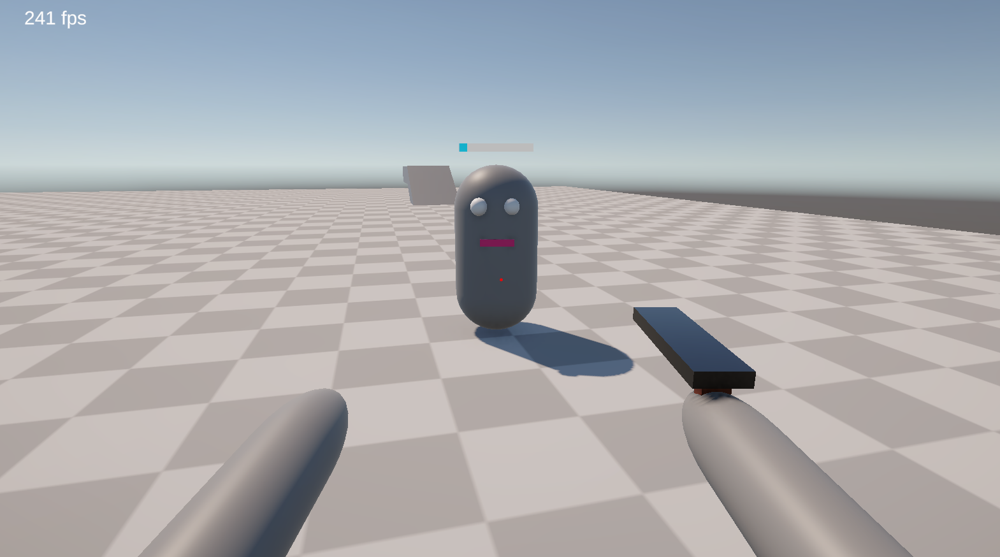

Prototypage d'un FPS
Réaliser un développement de jeux vidéos
Compétences
Rechercher des solutions à des problèmes simples et complexes Développer un projet en autonomie complèteCompétences techniques
Unity C#Savoirs être
Débrouillard Structuré TenaceDurée
3 joursTaille de l'équipe
1 personneLe projet
Prototypage sans graphismes d'un jeu vidéo de tire à la première personne (FPS).
Gestion des mouvements, de la physique.
Développement d'IA ennemies très basiques.
Création d'un système de tire et de points de vie.